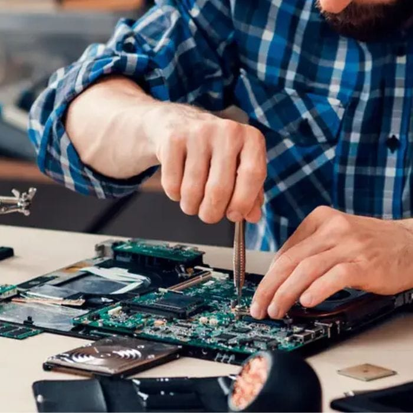
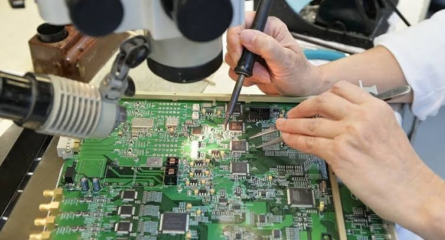
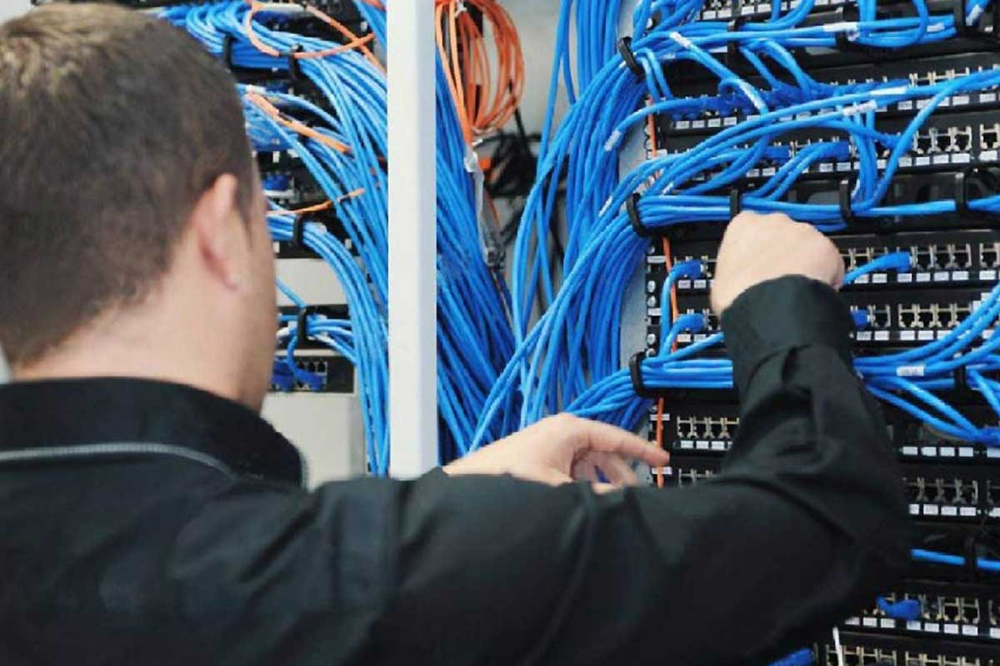

Nuestra misión
Brindar soluciones tecnológicas integrales mediante la comercialización de equipos electrónicos, asesoría especializada y servicios técnicos de calidad, contribuyendo al desarrollo tecnológico de nuestros clientes.
Tecnotech Ecuador es una empresa ubicada en la ciudad de Sucúa, provincia de Morona Santiago, dedicada a la asesoría, comercialización y reparación de equipos electrónicos e informáticos.
Ofrecemos soluciones tecnológicas orientadas a estudiantes, profesionales, hogares y empresas, proporcionando asesoramiento personalizado de acuerdo con sus necesidades.
Contamos con un equipo capacitado en ventas, servicio técnico, microelectrónica y redes informáticas, con el propósito de brindar atención profesional y soluciones confiables.
Brindar soluciones tecnológicas integrales mediante la comercialización de equipos electrónicos, asesoría especializada y servicios técnicos de calidad, contribuyendo al desarrollo tecnológico de nuestros clientes.
Consolidarnos como una empresa referente en soluciones tecnológicas en Morona Santiago, ampliando progresivamente nuestra presencia hacia diferentes provincias del Ecuador.
Contamos con profesionales especializados en distintas áreas de la tecnología.

Orientación personalizada para seleccionar productos tecnológicos de acuerdo con las necesidades y presupuestos de cada cliente.

Diagnóstico, reparación y mantenimiento de computadoras, laptops, impresoras y dispositivos electrónicos.

Diagnóstico de componentes electrónicos y reparación especializada de equipos a nivel de circuitos.

Asesoría y soporte en conectividad, configuración de redes y soluciones de infraestructura tecnológica.
Nuestro equipo está preparado para ayudarte a encontrar la solución adecuada.
Contáctanos